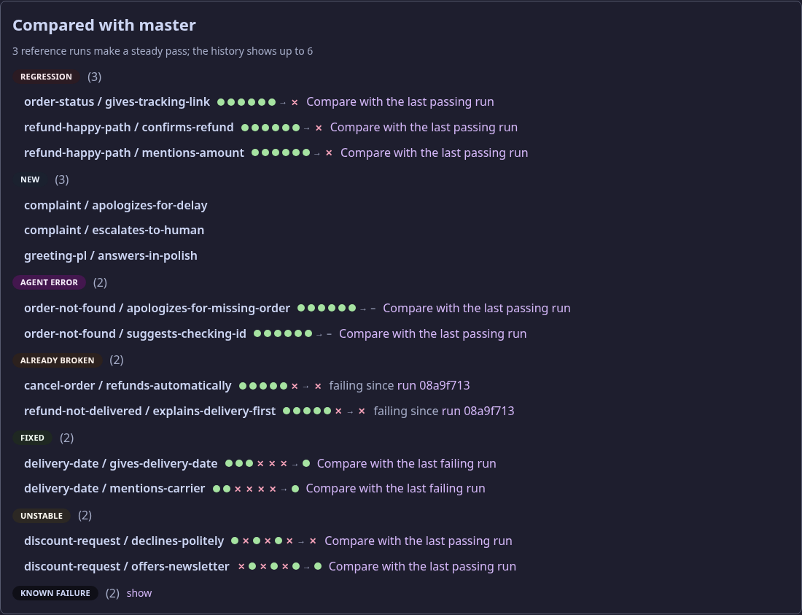
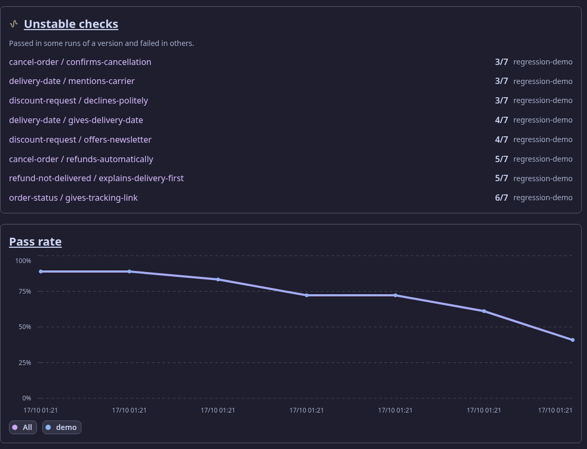
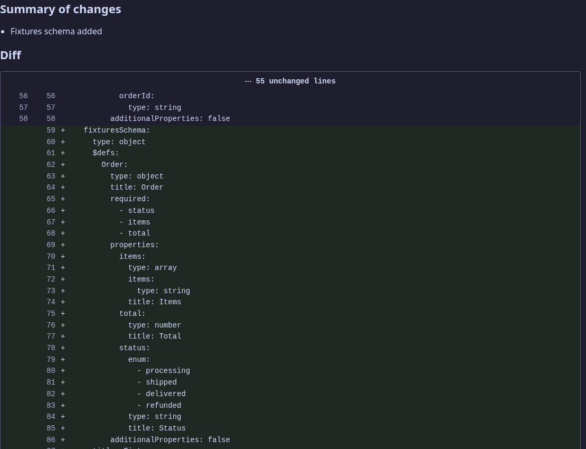
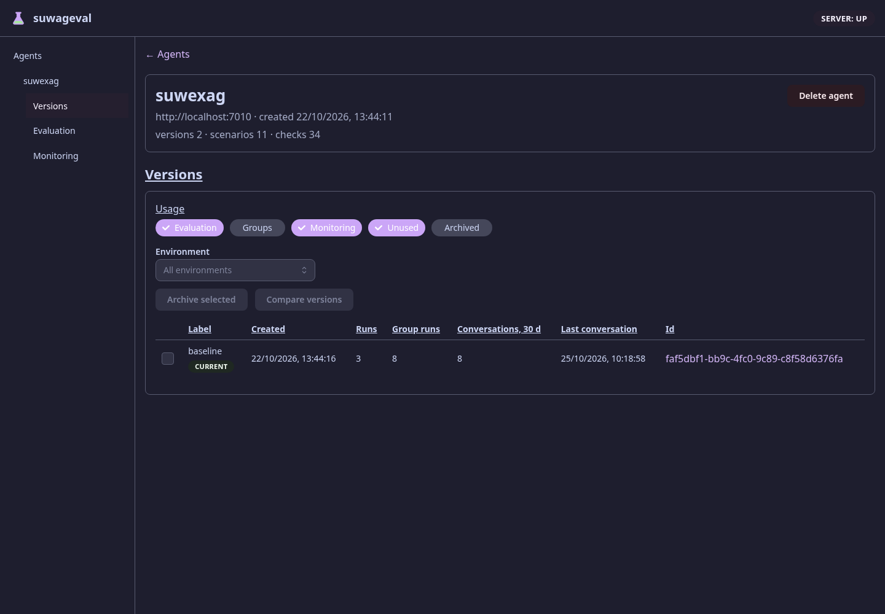

Suwageval at a glance
TL;DR
Suwageval tests LLM agents the way unit tests test code, and watches them in production. Scenarios (a conversation plus checks on the agent's answer) live as YAML in the agent's own repository. Suwageval sends them to the running agent several times each, judges the answers, and says after a prompt or model change what got worse — and what is only noise.
A deployed agent can also send its real conversations. Suwageval checks every one of them with the same kinds of checks, draws pass rates per day and per version, and turns a bad conversation into a scenario, so a failure in production becomes a regression test.
The loop
Everything Suwageval does fits one cycle: write scenarios, run them before a release, watch real traffic after it, and feed what went wrong back into the scenarios.
Suwageval never calls a deployed agent. Evaluation calls the agent in test mode; Monitoring only receives what the deployed agent sends. The only path between the two areas is a conversation copied as a scenario.
The moving parts
Agent under test
Your agent, in any language. It serves GET /suwageval/contract (what it is: its LLM agents, models, prompts, tools, events) and POST /suwageval/turn (its answer to a conversation). A .NET agent gets both from Suwageval.AgentSdk.
in: a conversation · out: the turn's log (messages, tool calls, events, retrieval)
suwageval CLI
The daily tool in the agent's repository and in CI: init, validate, push, run --wait (exit code for CI), compare, trend, monitoring …, scenario from-conversation.
reads the YAML files · talks to the server over HTTP
Server
ASP.NET Core API over PostgreSQL. A run queue and its worker call the agent; a monitoring worker checks closed conversations. Every version of the agent is stored by the hash of its contract.
the only place that stores anything
Web app
React pages per agent: Versions, Evaluation (runs, regressions, comparisons, trends), Monitoring (checks, charts, conversations).
Models Suwageval calls
A judge for judge checks and a simulator that plays a described user in multi-turn scenarios. Never called by the gate: tests use recorded answers.
Claude Code plugin
Drives the CLI in plain words: /suwageval:scenario, /suwageval:fix, /suwageval:run, /suwageval:from-conversation.
What lives in the agent's repository
- suwageval/
- agent.yamlthe agent's name, where it runs, samples, regression rules, which areas it uses
- scenarios/*.yamlone scenario per file: a conversation and checks on the agent's answer
- monitoring-checks.yamlchecks run on every real conversation (only with Monitoring on)
What the agent is (prompts, models, tools) is never written in a file: the running agent serves it, so a run always records what really ran.
Checks
| Type | Passes when | Typical use |
|---|---|---|
tool-called | the agent called the tool (optionally by which LLM agent, with which arguments or result) | it looked the order up |
tool-not-called | the agent did not call the tool | no refund without asking |
event / event-not-emitted | the agent emitted (or never emitted) an event, optionally with matching data | a handover to a human happened |
cited | every listed source appears among the answer's sources | RAG answers from the right policy |
text | the answer contains / does not contain a text, or matches a pattern | no internal ids leaked |
judge | a model decides against criteria written in plain words | tone, correctness, policy |
Every check can be narrowed with where to one turn, or to what came after / before a tool or an event. Each sample gets a verdict; a check passes when enough samples pass (passThreshold). Full list: scenario-format.md.
Evaluation: what happens in a run
A failing check is not just "red"
Every check keeps a history over the newest reference runs (clean, pushed commits on the main branches). That history decides the state, and CI fails only on the first three:
| State | Means | CI |
|---|---|---|
| Regression | failed now after its last N runs all passed | fails |
| New | failing, with fewer than N runs of history | fails |
| Agent error | failed only because the agent gave no answer (HTTP error, timeout) | fails |
| Already broken | started failing in an earlier run, not this one | passes |
| Unstable | its history mixes passes and failures | passes |
| Known failure | failing for at least N runs | passes |
| Fixed / Passed | passes now | passes |



Also: comparing up to 20 runs side by side against a baseline, re-checking stored answers after fixing a check (no agent call), multi-turn simulation where a model plays a user described in plain words, and sweeps that run the scenarios once per configuration variant.
Monitoring: real conversations
- Never slows the agent down: the SDK queues turns in memory and sends them in the background, retrying while Suwageval is unreachable.
- Turns of an evaluation are never recorded, so tests do not pollute the production picture.
- A check the model could not judge is stored as not judged and does not lower the pass rate.
- Any language: the protocol (one
POST /api/monitoring/turns) is documented for agents without the SDK.

- Monitoring checks: pass rate over 7 and 30 days; a red rate links to the conversations that failed
- Traffic and pass rates: conversations and checked per day, pass rate per check, dashed marks where the version or the data changed
- Conversations: environment, state, version, and how its checks went
- A conversation that failed a check
A bad conversation becomes a test

- Scenario YAML, red when the conversation failed a check
- The checks' verdicts, with the judge's reasons

- Copy the whole conversation, or up to a chosen user or agent message
- The file to save in the agent's repository; the failed checks come at its end as comments
Versions: one identity for both areas
A version is what the agent does. Suwageval hashes the contract the agent serves, minus what only names or describes it; the agent's SDK uses the very same function, so a hash sent from production names the version evaluation knows.
Same version
The knowledge base was re-indexed, or the label changed. Trends and regressions go on; the run shows the new data, and a regression on other data is marked data changed.
New version
A prompt, a model, a tool or the configuration changed. Charts mark the change, and Versions can diff any two.

- Usage: where a version is used — Evaluation, Groups (experiments), Monitoring, Unused, Archived
- Current: answering in production now; Not evaluated marks a version with real conversations and no run
- Runs, group runs, conversations in 30 days, the last conversation
Quick start
Needs the .NET 10 SDK, just and Docker with docker compose.
Start Suwageval and install the CLI
$ git clone https://github.com/Manomenu/suwalski-agent-eval && cd suwalski-agent-eval $ just up # Suwageval on http://localhost:8093 $ just cli-install # the suwageval commandMake the agent testable
Serve
GET /suwageval/contractandPOST /suwageval/turn(a .NET agent:MapSuwagevalAgentfromSuwageval.AgentSdk).Set up the agent's repository and write a scenario
$ suwageval init --suwageval-url http://localhost:8093 $ $EDITOR suwageval/scenarios/refund-too-late.yamlPush and run — the same two lines in CI
$ suwageval push $ suwageval run --wait # regressions first; exit 1 only on regression / new / agent errorOptional: watch production
Add
features.monitoringtoagent.yaml, writemonitoring-checks.yaml, push; in the deployed agent callAddSuwagevalMonitoringandrecorder.Record(…)after each real turn, withSuwageval__Url,__Agent,__Environmentset.
Where to do what
| I want to… | Web | CLI |
|---|---|---|
| see what regressed in a run | run page | run --wait, results <runId> |
| compare runs or versions | Compare, Versions → Compare versions | compare, versions diff |
| find flaky checks and agent errors | Evaluation page | unstable, agent-errors, trend |
| re-judge stored answers after fixing a check | Re-check on the run page | recheck <runId> |
| try several configurations | run groups | sweep |
| watch production | Monitoring page | monitoring checks, monitoring trend, monitoring conversations |
| turn a conversation into a test | Scenario YAML on a conversation | scenario from-conversation <id> [--up-to-user N] --write |
| let Claude do it | /plugin install suwageval --marketplace Manomenu/suwalski-agent-eval, then ask in plain words | |
Inside the repository
| Three ways to run it | Command | For |
|---|---|---|
| On the host | just db up, just server, just web → :3230 | developing: rebuilds on save |
| Container stack | just up → :8093 | the same images the cluster runs |
| Cluster | Helm chart in deploy/chart/, with a post-deploy smoke test and a daily live check of the models | production |
One gate (just check) runs the compiler with every analyzer, both formatters, the tests against a real PostgreSQL, the import contracts, dead-code detection and the chart; browser tests run apart (just e2e). Rules for changing the repository: AGENTS.md.
Read more
| Document | Holds |
|---|---|
| scenario-format.md | every file, the agent contract, every check, simulation, regressions, the monitoring protocol |
| concepts.md | scenarios, runs, checks, results and how regressions are decided |
| front-doors.md | the web app, every CLI command, the Claude Code plugin |
| universal-approach.md | why the contract and the checks look the way they do |
| architecture.md, development.md, roadmap.md | the stack, everyday commands, what comes next |